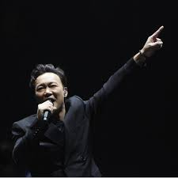
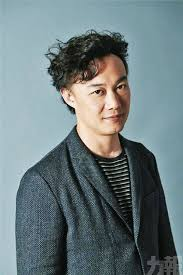
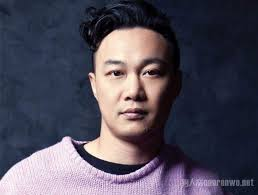

陈奕迅
英语名：Eason Chan
Yick-shun，出生于1974年7月27日，香港流行音乐男歌手及演员。他被《时代杂志》形容为带领广东音乐潮流及影响香港乐坛风格的人物，[9][10][11][12]
其2005年推出的大碟《U87》被《时代杂志》推选为五大亚洲最值得购买的唱片之一[13]，1995年因获得第14届TVB全球华人新秀歌唱大赛冠军而正式入行，至今已发行超过40张专辑。2010年，入选全球华人音乐殿堂—中国华语金曲奖“30年经典评选”，成为90年代出道歌手唯一代表。他曾三度获得台湾金曲奖最佳国语男歌手奖，与殷正洋并列为“金曲歌王”纪录保持人。
重要事件
- 2020年4月3日，推出与台湾歌手蔡依林合唱的英文抗疫歌曲
-
2020年4月19日，与歌神张学友及多名国外知名明星一同受邀参加“同一个世界:团结在家-公益演唱会”为抗击严重特殊传染性肺炎疫情筹款。
- 2020年7月15日，推出自己20年前的名曲《Shall We Talk》
- 2020年8月5日，推出翻唱作品“世界上不存在的歌 (2020重唱版)”。
-
2020年10月15日，继接近两年前的作品后，再度推出粤语歌《致明日的舞》。
- 2020年11月20日，推出广东歌《是但求其爱》
- 2021年稍后时间将推出新专辑，旋律全部由林家谦包办。
- 2021年3月初，随着电视广播有限公司 (TVB) 与三大唱片公司“破冰”
- 2021年9月10日，与歌剧歌唱家芮妮·弗莱明、钢琴家郎朗一同推出新歌
主要荣誉
- 10次夺得“叱咤乐坛男歌手金奖”（2001-02、2005-07、2009-13）
- 16次夺得“叱咤乐坛男歌手奖”（1999-2003、2005-15）
- 18次夺得“叱咤十大”（1998-2003、2005-13、2015-16、2018）
-
10次夺得“十大中文金曲颁奖音乐会全球华人至尊金曲奖”（2001〈ShallWeTalk〉、2002〈明年今日〉、2005〈夕阳无限好〉、2007〈富士山下〉、2009〈七百年后〉、2010〈陀飞轮〉、2012〈重口味〉、2013〈任我行〉、2016〈四季〉、2017〈谁来剪月光〉）
-
13次兼连续
13年无间断获得“十大中文金曲颁奖音乐会优秀流行歌手大奖”（2005-17）
-
10次夺得“十大中文金曲奖全年最高销量男歌手”（2002-03、2007-13、2015）
-
17次夺得“十大中文金曲颁奖音乐会十大中文金曲奖”（1998-2003、2005-07、2009-13、2015-16、2018）
- 20次获得“十大优秀流行歌手”（1999-2003、2005-19）
- 5次获得“四台联颁音乐大奖-传媒大奖”（2000-02、2005、2007）
主要演出
| 年份 |
演唱会名 |
| 1999年 |
《Big Live陈奕迅大个唱99》 |
| 2001年 |
《The Easy Ride》 2006年 《Get aLife》 |
| 2007年 |
《Eason's Moving On Stage 1》 |
| 2010年 |
《DUO》 |
| 2012年 |
《Feel Free! Feel Music!》 |
| 2013年 |
《EASON's LIFE》 |
| 2019年 |
《Fear and Dreams》 |
| 2020年 |
《Live is so much better with Eason Chan Charity Concert》 |
生活照



早年生活
陈奕迅曾就读圣若瑟小学，中学时因为父亲陈裘大为高级公务员，自中学开始与哥哥陈泽迅获政府津贴到英国唐德塞中学读书，大学时期在金士顿大学修读建筑学及四年正统音乐课程。于其间考得英国皇家音乐学院八级声乐证书（八级为业余最高）。1995年暑假期间回香港参加TVB及华星唱片合办的第14届新秀歌唱大赛，演唱张学友的歌曲《望月》，在多个环节均获得高评分，成为该届冠军，随即跟华星唱片公司签下歌星合div